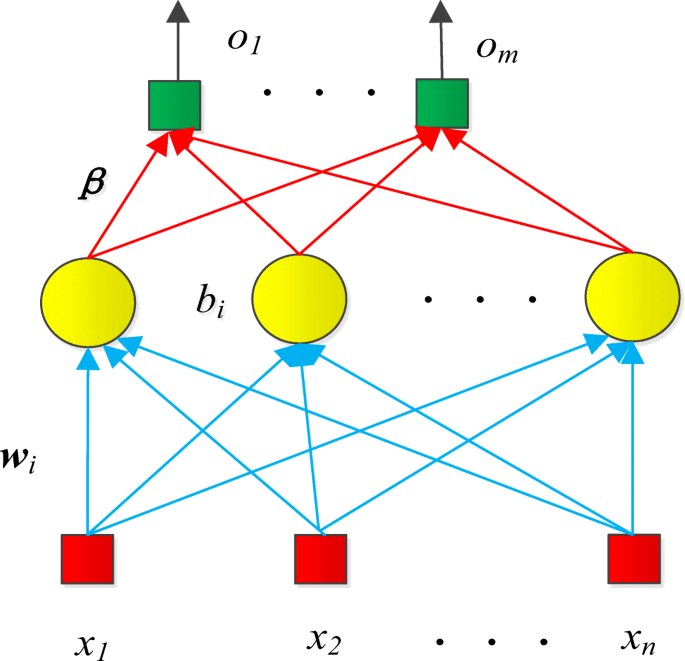

I currently work as a Research Assistant with Professor John Quilty at the University of Waterloo. His research focuses on using modern computational techniques to learn more about the development of hydrological forecasting. The main computational techniques include the following: 1. AI, machine learning, and deep learning. 2. Coupling physical and data driven models. 3. Developing uncertainty estimation methods for existing data driven models. More information can be found here about the research that Professor Quilty does.
I have supported Professor Quilty's research team in a number of ways: 1. Helped debug code and complete data analysis in MATLAB that was used in the development of a paper that is currently under reivew. The paper was focused on comparing ELM, BELM, and SBELMs. 2. Completed a literature review focused on applications of Bayesian Extreme Learning Machines. 3. Am currently developing ways to select input variables for SBELM neural networks.